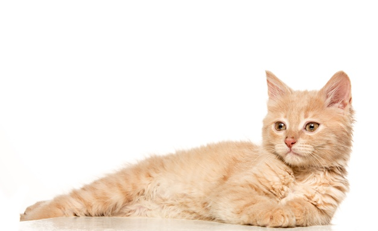

Tanda - Tanda Kucing Dalam Keadaan Senang Published 1 months ago5 min read4 comments  Siapa yang punya kucing peliharaan? Apakah kamu penasaran bagaimana cara mengetahui bahwa kucing suka dan senang dengan kita? Kucing punya bahasa tubuh yang berbeda dari manusia. Ada banyak bahasa tubuh dan tanda kucing suka dengan kita, inilah beberapa di antaranya: 1. Mendengkur Teman-teman pernah mendengar kucing mengeluarkan suara seperti dengkuran? Ada banyak hal yang menyebabkan kucing mendengkur. Salah satunya adalah karena ia merasa senang. Misalnya saat dielus atau saat berada di dekat kita. Jadi, ini bisa jadi salah satu tanda kucing suka dengan kita. 2. Memijat Apakah kucingmu suka memijat-mijat tangan atau kakimu? Ini bisa jadi tanda kucing senang dengan kita, lo. Perliaku ini juga berarti kucing nyaman berada di dekat kita. 3. Menjilat Selain untuk membersihkan badannya, kucing juga menjilat saudaranya untuk menunjukkan perhatian dan rasa sayang. Kalau ia menjilati tangan kita atau anggota tubuh lain, artinya ia senang dengan kita. 4. Menunjukkan Perut Tahukah teman-teman? Bagi hewan, perut adalah bagian tubuh yang harus dilindungi. Karena perut adalah salah satu bagian tubuh yang penting dan akan berakibat fatal jika terluka. Karena itu, kebanyakan hewan tidak suka dipegang perutnya. Jadi, kalau kucing justru tidur sambil memperlihatkan perut, tandanya ia sudah merasa nyaman dan suka dengan kita. 5. Mengedip Perlahan Pernah lihat kucing melihat ke arahmu lalu berkedip perlahan? Mata yang berkedip perlahan ini menunjukkan bahwa kucing percaya pada kita dan merasa aman berada di dekat kita. 6. Mengikuti Kita Ke Mana-Mana Teman-teman pernah diikuti kucing ke kamar mandi, kamar tidur, naik atau turun tangga, atau ke mana pun kakimu melangkah? Teman-teman tidak perlu kesal, karena itu tandanya kucing suka dengan kita. Kucing akan senang mengikuti ke mana-mana ketika menemukan orang yang ia suka. 7. Ekornya Naik Ketika Kita Datang Gerakan ekor kucing bisa menunjukkan apa yang mereka rasakan, lo. Jika sedang takut atau merasa terancam, biasanya ekor kucing akan terlihat tegang dan tubuhnya sedikit melengkung. Tapi, jika ekornya naik ke atas secara perlahan saat melihat kita datang, artinya kucing merasa senang dengan kedatangan kita. Itulah tanda-tanda kucing senang dengan kita. Bagaimana dengan kucingmu? Designed with by Dewi Sitha for developers Choose Colour